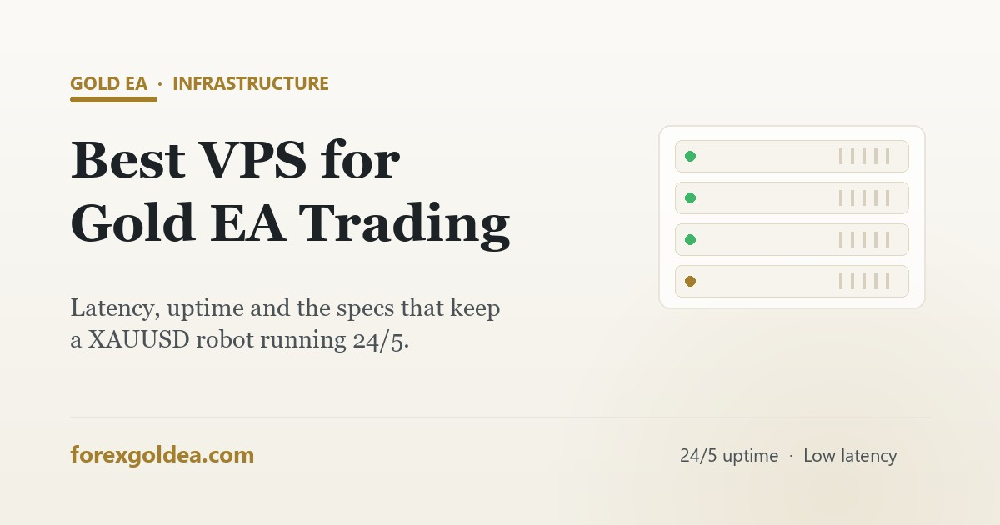

Best VPS for a gold EA: why latency and uptime decide results

You can have the best gold robot in the world and still lose to something as boring as your internet dropping at 2 am. That's the problem a VPS solves. Here's what it actually does, the specs that matter, and how to set one up properly.
What a VPS actually is (30 seconds)
A VPS — virtual private server — is a small Windows computer running in a professional data centre that you control remotely. You install MetaTrader on it, attach your EA, and disconnect. The EA keeps trading around the clock whether your own computer is on, off, or being used for something else entirely.
Why it matters more for gold than most pairs
- Gold moves fast. XAU/USD covers more ground per hour than a major forex pair, so a frozen terminal during a move costs more. If you're new to how the robot itself works, start with what is an EA.
- Trade management is continuous. An EA doesn't just open trades — it trails stops and closes positions. A disconnection mid-trade leaves a position unmanaged.
- Latency turns into slippage. The farther your terminal is from the broker's server, the later your orders arrive. On a volatile metal, late fills are worse fills.
- Home PCs fail in boring ways. Windows updates, sleep mode, power cuts, router restarts — each one is a gap in your EA's coverage.
The specs that actually matter
| Spec | What to look for | Why |
|---|---|---|
| Latency | <50 ms to broker (<10 ms ideal) | Faster fills, less slippage |
| Uptime | 99.9%+ guarantee | The whole point of a VPS |
| Location | Near your broker (London / NY / Amsterdam) | Latency follows geography |
| RAM | 2–4 GB per 1–2 terminals | MetaTrader is light; don't overpay |
| Storage | SSD/NVMe | Fast restarts and updates |
| OS | Windows Server | MT4/MT5 run natively |
Our recommended VPS
GoVPSFX — forex-focused VPS hosting
We run our own setups on GoVPSFX: forex-specialised VPS plans with low-latency locations, SSD storage and Windows pre-configured for MetaTrader. Plans start small — right-sized for a single gold EA — and scale if you add terminals.
Get a Forex VPS (GoVPSFX) →Affiliate link — we may earn a commission at no extra cost to you.
A note on free broker VPS offers: some brokers include one above a deposit or monthly-volume threshold, and they can work fine. Just read the conditions — specs are often minimal, and the "free" can end if your volume drops. A specialist VPS is usually the more predictable choice.
Setting it up in 5 steps
- Order the VPS and pick the location closest to your broker's server.
- Connect via Remote Desktop (RDP) with the credentials you receive.
- Install MetaTrader and log in to your broker account.
- Install the EA — copy it into the MQL4/MQL5 → Experts folder, restart, attach to the XAU/USD chart and enable Auto Trading (full walkthrough: install a gold EA on MT4 & MT5).
- Disconnect and verify. Close RDP, wait a few minutes, reconnect — the terminal and EA should still be running. That's the test that matters.
One honest caveat
A VPS removes failure modes; it doesn't add edge. If a strategy loses, it will lose with perfect uptime too. Think of the VPS as insurance that your EA runs as designed — the design itself still has to be sound. On that, see are gold trading EAs actually profitable? and how to backtest a gold EA.
Frequently asked questions
Do I need a VPS to run a gold EA?
For 24/5 trading, effectively yes — it keeps the EA running through PC shutdowns, sleep and internet drops, with low latency to the broker.
What latency should a forex VPS have?
Under ~50 ms to your broker is comfortable; under 10 ms is ideal for faster strategies. Pick a location near the broker's data centre, not near your home.
What specs does an MT4/MT5 VPS need?
1–2 vCPU, 2–4 GB RAM and SSD storage handle one or two terminals easily. Prioritise uptime over horsepower.
Can I use a free broker VPS?
Sometimes — check the deposit/volume conditions and specs. Specialist forex VPS hosting is usually more predictable.
How do I put my gold EA on a VPS?
RDP in, install MetaTrader, log in, copy the EA to the Experts folder, attach it to XAUUSD, enable Auto Trading, then disconnect and confirm it keeps running.
Does a VPS improve results?
It prevents losses from downtime and latency rather than adding profit — the strategy still decides the outcome.
Bottom line
If a gold EA is worth running, it's worth running properly: on a machine that never sleeps, never loses Wi-Fi and sits milliseconds from the broker. The specs are cheap and modest — latency, uptime and location are the whole game. Set it up once, verify it survives a disconnect, and let the robot do its job.
Affiliate disclosure: we earn a commission when you open an account or purchase through our partner links, at no extra cost to you.